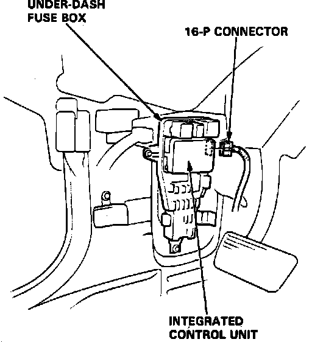

Charge Lamp/Indicator: Testing and Inspection
1. Ensure alternator belt is properly adjusted and that all electrical connections are secure and free from corrosion. Check underdash fuse No. 2.2. Observe warning lamp with ignition on and engine not running.
3. If warning lamp does not light, disconnect electrical connector from alternator and short the white/blue wire in terminal to ground.
4. If lamp still does not light, check the following:
a. Defective bulb.
b. Open in black/yellow wire between warning lamp and fuse panel or between fuse panel and ignition switch.
c. Open in white/blue wire between warning lamp and voltage regulator.
5. If lamp lights in step 3, perform ALTERNATOR & REGULATOR TEST.
6. Run engine at idle and observe warning lamp.
7. If lamp remains lit, check condition of yellow/blue wire between relay box and alternator. If fuse and wire are satisfactory, perform ALTERNATOR & REGULATOR TEST.
Fig. 17 Integrated Control Unit 16-pin Connector:

8. If system is charging normally, proceed as follows:
a. Remove door sill molding and cowl lining.
b. Remove foot rest, then pull LH front carpet back.
c. Remove dash panel fuse box attaching bolts.
d. Remove 16-pin connector from integrated control unit behind dash fuse panel, Fig. 17.
e. Do not disconnect fuse panel electrical connectors.
f. If indicator lamp goes off, there is a shorted integrated control unit.
9. Remove glove box, then disconnect anti-lock brake control unit electrical connector.
10. If lamp goes off, there is a shorted anti-lock brake control unit.
11. If lamp remains on, a short to ground at white/blue wire is indicated.